| # | Player | Score | P(top10) |
|---|---|---|---|
| 1.0 | Daryl Mitchell | 77 | 100% |
| 2.0 | Curtis Campher | 76 | 98% |
| 3.0 | Kusal Mendis | 72 | 96% |
| 4.0 | Mark Chapman | 63 | 93% |
| 5.0 | Sikandar Raza | 62 | 95% |
| 6.0 | Jimmy Neesham | 58 | 92% |
| 7.0 | George Dockrell | 45 | 82% |
| 8.0 | Ibrahim Zadran | 45 | 79% |
| 9.0 | Harry Tector | 41 | 78% |
| 10.0 | Ryan Burl | 35 | 66% |
| # | Player | Score | P(top10) |
|---|---|---|---|
| 1.0 | Sikandar Raza | 85 | 100% |
| 2.0 | Maheesh Theekshana | 78 | 99% |
| 3.0 | Adam Zampa | 77 | 100% |
| 4.0 | Joshua Little | 64 | 98% |
| 5.0 | Adil Rashid | 59 | 94% |
| 6.0 | Roston Chase | 48 | 88% |
| 7.0 | Obed McCoy | 40 | 93% |
| 8.0 | Richard Ngarava | 37 | 86% |
| 9.0 | Alzarri Joseph | 26 | 61% |
| 10.0 | Mark Adair | 26 | 52% |
Score = 0–100 reliability composite (percentile among eligible players). P(top10) = share of 100 match-level bootstrap resamples in which the player stays in the top 10. This is the share of resamples in which the player stays top 10 within the acquirable pool, a measure of uncertainty in the 2022–26 evidence and not a forecast. The pool is small, so high values partly reflect limited competition.
SupeRR Selector Season 2 asks for two ordered top-10 lists (batters and bowlers) of the players who perform best under pressure, plus a report explaining how pressure was defined, how ratings were built, how comparisons were made fair, the evidence for the top 10, and the reliability and limitations of the method.
Primary source: the official RR data pack. It contains six CSVs (ball-by-ball, matches, competitions, teams, playing XIs, competition-team-player mapping) covering IPL 2022–2026, bilateral and multi-nation T20Is, and two A-team tournaments. The original archive is preserved unmodified (SHA-256 recorded), and all work runs on a copy.
| Item | Value |
|---|---|
| Deliveries (regulation innings) | 200,961 |
| Matches with ball-by-ball data | 867 |
| IPL matches | 367 |
| T20I matches | 470 |
| Distinct batters / bowlers | 888 / 647 |
| Date range | 2022-01-22 to 2026-11-01 |
other behaves as a no-ball. Treating it as legal would create 244 seven-ball overs. Legal balls exclude wides and both no-ball codes.Every pre-ball state variable uses only information available before the delivery: score, wickets in hand, legal balls left (respecting D/L-reduced innings), target, runs needed, and current and required rates.
Pressure cannot be observed directly, so it must be defined. We built two independent candidates, found that each had a blind spot, and combined them.
A win-probability model gives each team's chance of winning before every ball. The Leverage Index is the expected absolute swing in that probability from the next ball, normalised so the average ball = 1. A last-over chase needing 4 off 2 balls reaches about 30. A one-sided chase sits near 0.
| Component | Weight |
|---|---|
| Scoreboard gap (chase: required rate vs era par; batting first: projected shortfall vs par) | 25% |
| Wickets lost relative to balls used | 20% |
| Closeness of contest (from win probability) | 20% |
| Wickets in previous 12 balls (collapse) | 15% |
| Dot-ball share of previous 12 legal balls (squeeze) | 10% |
| Innings progress (share bowled)² | 10% |
A review (v1 → v2) fixed three flaws. Batting-first middle-overs collapses had been ignored (2.6% → 23.9% HIGH). There was a hard cliff between overs 15 and 16 (the largest jump fell from 39 to 5 percentage points). Leverage also stepped at phase boundaries.
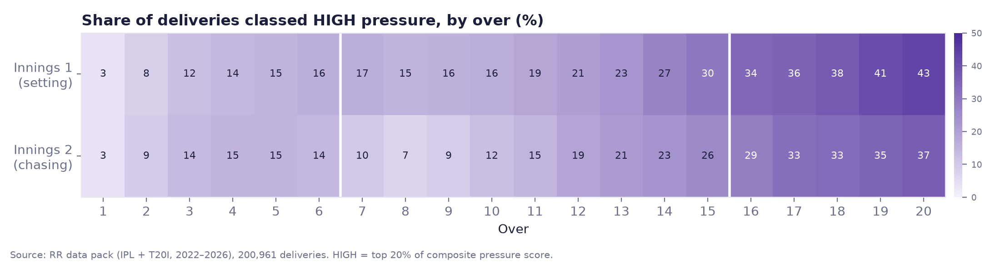
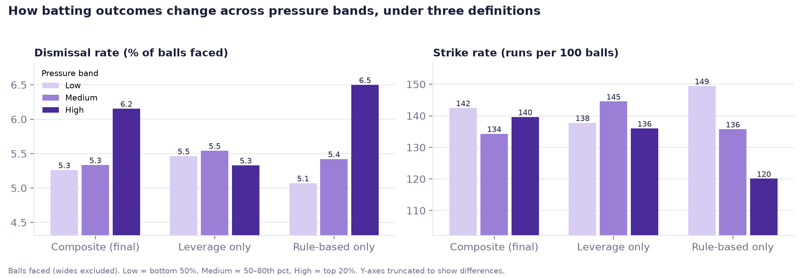
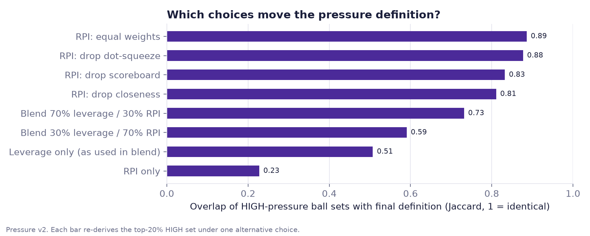
LightGBM models estimate the runs and dismissal probability an average player would produce in each situation: over, wickets, chase state, bowling type and batter hand, plus the scoring environment. Separate models cover runs conceded and wickets for the bowler. Player identity is never a feature.
Batting value = (runs − expected runs) − C × (dismissed − expected dismissal probability). Bowling value is the mirror image. C is the cost of a wicket in that situation: the expected remaining runs with w wickets in hand minus with w − 1, for the same overs left. A wicket early in the innings costs more than one in the last over.
A ridge regression fits the per-ball value on batter and bowler effects together. Each player is rated net of the opponents actually faced. The ridge penalty acts as a Gaussian prior: small samples shrink towards average. Penalties were tuned out of time, fitting on 2022–24 and scoring 2025–26. Two ratings feed the score: pressure performance (a ridge on HIGH-pressure balls only) and usual ability (all balls).
Each player's HIGH-minus-ordinary difference is shrunk by empirical Bayes. The true spread of this difference is estimated by subtracting sampling noise from the observed spread. Each player keeps the share of his raw difference that his sample size justifies.
All models use a chronological split with matches kept whole: train 2022–24, validate 2025, test 2026. Models are chosen on validation only. Sophisticated models had to beat simple baselines.

| Model (2026 test) | Brier | Log loss | AUC |
|---|---|---|---|
| Innings 1 · logistic | 0.233 | 0.664 | 0.694 |
| Innings 1 · base rate | 0.253 | 0.698 | 0.500 |
| Innings 2 · logistic | 0.116 | 0.361 | 0.927 |
| Innings 2 · base rate | 0.254 | 0.702 | 0.500 |
Expectation models beat an innings × over baseline on RMSE in both 2025 and 2026 (runs per ball, 2026: 1.808 vs 1.826). Ball-level dismissals are close to random, so the wicket models only match the baseline. A bug caught during validation: without the environment par, 2026 expected runs per ball came out at 1.35 against 1.51 actual. That would have flattered every 2026 batter.

Player-level persistence from 2022–24 to 2025–26 tells the same story. Ordinary-situation value carries over (batting r ≈ 0.37–0.49). Pressure-only value does not (r ≈ 0), and adding pressure terms to the rating model never improved out-of-time prediction. Implication: a raw "clutch" table would mostly rank noise. Our score uses opponent-adjusted pressure performance, consistency and impact (all shrunk by sample size), anchored by underlying ability.
| Component | Weight | Definition |
|---|---|---|
| Pressure performance | 35% | Opponent-adjusted value on HIGH balls (ridge, shrunk) |
| Consistency | 20% | Share of pressure innings/spells with value ≥ 0 (Beta-Binomial shrunk) |
| Match impact | 20% | Win Probability Added per HIGH ball (empirical Bayes) |
| Vs own baseline | 15% | HIGH minus ordinary value (empirical Bayes) |
| Usual ability | 10% | All-ball opponent-adjusted rating (best predictor) |
The score is the weighted mean of component percentiles among eligible players (0–100), reported as whole numbers to avoid false precision. The prompt's starting weights were treated as a hypothesis. "Sample confidence" was dropped because shrinkage already uses sample size. "Role adaptability" moved to the squad-fit layer. Pressure performance and impact correlate (ρ ≈ 0.8), so a no-impact variant is also tested.
| Side | Variant | Top-10 kept | Spearman |
|---|---|---|---|
| batting | final | 10 | 1.0 |
| batting | equal | 9 | 0.996 |
| batting | prompt_hypothesis_mapped | 10 | 0.999 |
| batting | pressure_only | 10 | 0.971 |
| batting | no_impact | 9 | 0.987 |
| batting | predictive_tilt | 8 | 0.968 |
| batting | baseline_delta_heavy | 8 | 0.972 |
| bowling | final | 10 | 1.0 |
| bowling | equal | 9 | 0.997 |
| bowling | prompt_hypothesis_mapped | 10 | 0.999 |
| bowling | pressure_only | 9 | 0.968 |
| bowling | no_impact | 9 | 0.987 |
| bowling | predictive_tilt | 9 | 0.969 |
| bowling | baseline_delta_heavy | 9 | 0.974 |
| Side | Variant | Top-10 kept | Spearman |
|---|---|---|---|
| batting | blend_30lev_70rpi | 8 | 0.746 |
| bowling | blend_30lev_70rpi | 6 | 0.864 |
| batting | blend_70lev_30rpi | 7 | 0.877 |
| bowling | blend_70lev_30rpi | 7 | 0.905 |
| batting | high_top15pct | 7 | 0.757 |
| bowling | high_top15pct | 8 | 0.893 |
| batting | high_top30pct | 5 | 0.848 |
| bowling | high_top30pct | 6 | 0.868 |
Each variant re-runs the whole pipeline on the same eligible pool. The definition matters more than the weights.
| # | Player | Role (data) | Score | HIGH balls | Pressure inns | Value/100 HIGH | SR HIGH / LOW | P(top 10) | 90% rank |
|---|---|---|---|---|---|---|---|---|---|
| 1.0 | Daryl Mitchell | Middle order (4-5) | 77 | 262 | 18 | +21.1 | 154 / 152 | 100% | 1–9 |
| 2.0 | Curtis Campher | Middle order (4-5) | 76 | 155 | 11 | +25.8 | 133 / 135 | 98% | 1–9 |
| 3.0 | Kusal Mendis | Opener | 72 | 171 | 12 | +26.0 | 131 / 128 | 96% | 1–9 |
| 4.0 | Mark Chapman | Middle order (4-5) | 63 | 164 | 10 | +24.6 | 138 / 149 | 93% | 1–11 |
| 5.0 | Sikandar Raza | Middle order (4-5) | 62 | 273 | 19 | +17.9 | 142 / 146 | 95% | 1–10 |
| 6.0 | Jimmy Neesham | Finisher (6-7) | 58 | 165 | 14 | +15.7 | 146 / 112 | 92% | 2–11 |
| 7.0 | George Dockrell | Finisher (6-7) | 45 | 207 | 16 | +9.5 | 142 / 139 | 82% | 2–13 |
| 8.0 | Ibrahim Zadran | No.3 | 45 | 206 | 10 | +6.8 | 114 / 123 | 79% | 1–14 |
| 9.0 | Harry Tector | Middle order (4-5) | 41 | 208 | 12 | +4.3 | 119 / 128 | 78% | 3–14 |
| 10.0 | Ryan Burl | Middle order (4-5) | 35 | 210 | 13 | -7.7 | 121 / 116 | 66% | 5–13 |
# = rank within the RR-acquirable pool. The score is unchanged: a percentile among all eligible players, so it compares directly with the unrestricted ranking below.
| Overall # | Player | Score | Why not in the RR list |
|---|---|---|---|
| 1 | Shreyas Iyer | 97 | Under IPL contract: Punjab Kings (IPL 2026 squad) |
| 2 | Heinrich Klaasen | 95 | Under IPL contract: Sunrisers Hyderabad (IPL 2026 squad) |
| 3 | Rajat Patidar | 93 | Under IPL contract: Royal Challengers Bengaluru (IPL 2026 squad) |
| 4 | Namboori Tilak Varma | 91 | Under IPL contract: Mumbai Indians (IPL 2026 squad) |
| 5 | Ishan Kishan | 85 | Under IPL contract: Sunrisers Hyderabad (IPL 2026 squad) |
| 6 | Naman Dhir | 83 | Under IPL contract: Mumbai Indians (IPL 2026 squad) |
| 7 | David Miller | 82 | Under IPL contract: Delhi Capitals (IPL 2026 squad) |
| 8 | Tim David | 82 | Under IPL contract: Royal Challengers Bengaluru (IPL 2026 squad) |
| 9 | Suryakumar Yadav | 81 | Under IPL contract: Mumbai Indians (IPL 2026 squad) |
| 10 | Glenn Phillips | 81 | Under IPL contract: Gujarat Titans (IPL 2026 squad) |
Value/100 HIGH = runs above context expectation per 100 HIGH-pressure balls (wicket-cost adjusted, before opponent adjustment). Raw SR/economy are descriptive. HIGH-pressure balls cluster late in innings, so a lower raw rate can still be above what the situation demanded.

Each profile shows the verified identity and IPL 2027 status, the evidence, a comparison with the two strongest unselected players in the same data role, a bootstrap verdict on whether the difference is meaningful (clear ≥ 80%, moderate 65–80%, slight 55–65%, otherwise statistically indistinguishable), and how the player fits RR.
| Component (percentile) | Daryl Mitchell | Charith Asalanka | Moeen Ali |
|---|---|---|---|
| Pressure perf. | 81 | 12 | 14 |
| Consistency | 57 | 40 | 16 |
| Impact | 95 | 1 | 5 |
| Vs baseline | 74 | 23 | 6 |
| Usual | 71 | 9 | 36 |
| Score (rank) | 77 (1) | 17 (13) | 14 (14) |
| HIGH-pressure balls | 262 | 285 | 185 |
Descriptive: SR 154.2 under HIGH pressure vs 151.8 in LOW-pressure situations. Strongest: impact, pressure perf.. Weakest: consistency.
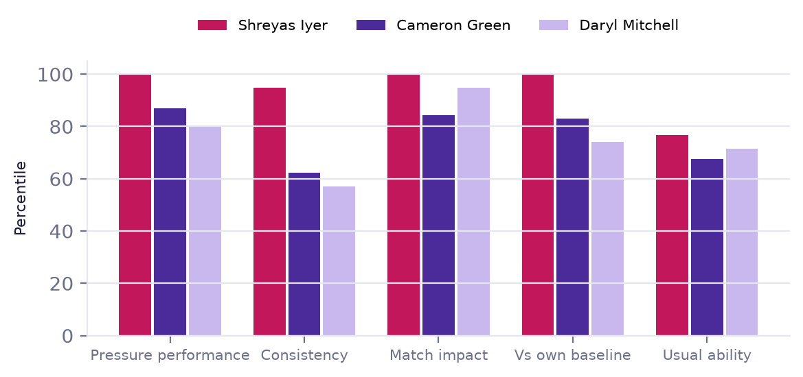
Best fits RR's Middle-overs batting need (priority 60/100). Context value in the middle phase is +3.2 per 100 balls over 675 balls (percentile 66 among eligible players). Overseas player; squad-fit 61 (62 without the overseas-slot cost). Hypothetical model estimate, not a forecast: +11.9 runs per season if given the 2026 middle balls of Dhruv Jurel (203 balls).
| Component (percentile) | Curtis Campher | Charith Asalanka | Moeen Ali |
|---|---|---|---|
| Pressure perf. | 68 | 12 | 14 |
| Consistency | 82 | 40 | 16 |
| Impact | 94 | 1 | 5 |
| Vs baseline | 97 | 23 | 6 |
| Usual | 23 | 9 | 36 |
| Score (rank) | 76 (2) | 17 (13) | 14 (14) |
| HIGH-pressure balls | 155 | 285 | 185 |
Descriptive: SR 132.9 under HIGH pressure vs 135.2 in LOW-pressure situations. Strongest: vs baseline, impact. Weakest: usual.
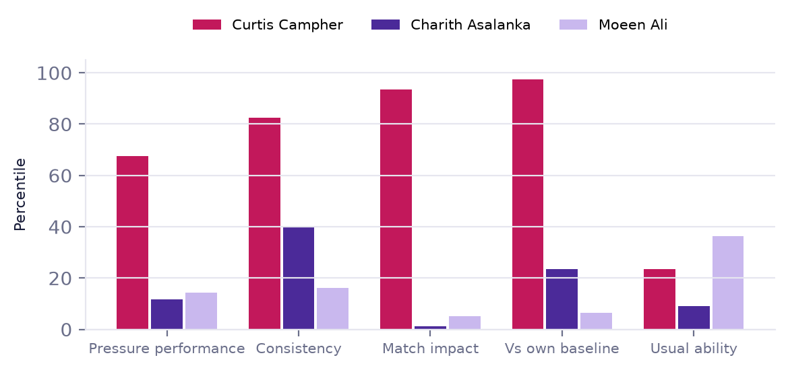
Best fits RR's Middle-overs batting need (priority 60/100). Context value in the middle phase is +0.7 per 100 balls over 387 balls (percentile 42 among eligible players). Overseas player; squad-fit 52 (53 without the overseas-slot cost). Hypothetical model estimate, not a forecast: +6.7 runs per season if given the 2026 middle balls of Dhruv Jurel (203 balls).
| Component (percentile) | Kusal Mendis | Shai Hope | Lorcan Tucker |
|---|---|---|---|
| Pressure perf. | 70 | 21 | 10 |
| Consistency | 68 | 38 | 38 |
| Impact | 77 | 18 | 4 |
| Vs baseline | 95 | 21 | 34 |
| Usual | 40 | 58 | 5 |
| Score (rank) | 72 (3) | 28 (11) | 18 (12) |
| HIGH-pressure balls | 171 | 155 | 169 |
Descriptive: SR 131.0 under HIGH pressure vs 128.4 in LOW-pressure situations. Strongest: vs baseline, impact. Weakest: usual.

Best fits RR's Middle-overs batting need (priority 60/100). Context value in the middle phase is +0.2 per 100 balls over 528 balls (percentile 37 among eligible players). Overseas player; squad-fit 50 (50 without the overseas-slot cost). Hypothetical model estimate, not a forecast: +5.7 runs per season if given the 2026 middle balls of Dhruv Jurel (203 balls).
| Component (percentile) | Mark Chapman | Charith Asalanka | Moeen Ali |
|---|---|---|---|
| Pressure perf. | 66 | 12 | 14 |
| Consistency | 26 | 40 | 16 |
| Impact | 81 | 1 | 5 |
| Vs baseline | 82 | 23 | 6 |
| Usual | 61 | 9 | 36 |
| Score (rank) | 63 (4) | 17 (13) | 14 (14) |
| HIGH-pressure balls | 164 | 285 | 185 |
Descriptive: SR 138.4 under HIGH pressure vs 149.3 in LOW-pressure situations. Strongest: vs baseline, impact. Weakest: consistency.
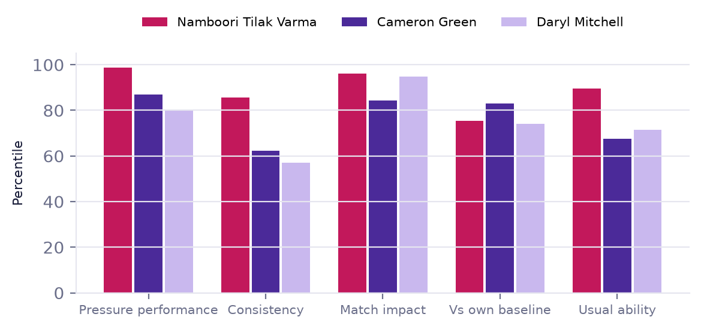
Best fits RR's Middle-overs batting need (priority 60/100). Context value in the middle phase is +8.8 per 100 balls over 544 balls (percentile 92 among eligible players). Overseas player; squad-fit 70 (73 without the overseas-slot cost). Hypothetical model estimate, not a forecast: +23.2 runs per season if given the 2026 middle balls of Dhruv Jurel (203 balls).
| Component (percentile) | Sikandar Raza | Charith Asalanka | Moeen Ali |
|---|---|---|---|
| Pressure perf. | 74 | 12 | 14 |
| Consistency | 51 | 40 | 16 |
| Impact | 47 | 1 | 5 |
| Vs baseline | 73 | 23 | 6 |
| Usual | 60 | 9 | 36 |
| Score (rank) | 62 (5) | 17 (13) | 14 (14) |
| HIGH-pressure balls | 273 | 285 | 185 |
Descriptive: SR 141.8 under HIGH pressure vs 145.8 in LOW-pressure situations. Strongest: pressure perf., vs baseline. Weakest: impact.
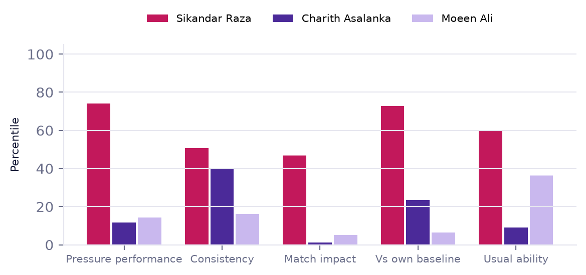
Best fits RR's Death-overs / finishing batting need (priority 81/100). Context value in the death phase is +21.6 per 100 balls over 185 balls (percentile 97 among eligible players). Overseas player; squad-fit 82 (87 without the overseas-slot cost). Hypothetical model estimate, not a forecast: +19.7 runs per season if given the 2026 death balls of Ravindra Jadeja (74 balls).
| Component (percentile) | Jimmy Neesham | Shai Hope | Lorcan Tucker |
|---|---|---|---|
| Pressure perf. | 55 | 21 | 10 |
| Consistency | 47 | 38 | 38 |
| Impact | 75 | 18 | 4 |
| Vs baseline | 77 | 21 | 34 |
| Usual | 32 | 58 | 5 |
| Score (rank) | 58 (6) | 28 (11) | 18 (12) |
| HIGH-pressure balls | 165 | 155 | 169 |
Descriptive: SR 146.1 under HIGH pressure vs 111.7 in LOW-pressure situations. Strongest: vs baseline, impact. Weakest: usual.
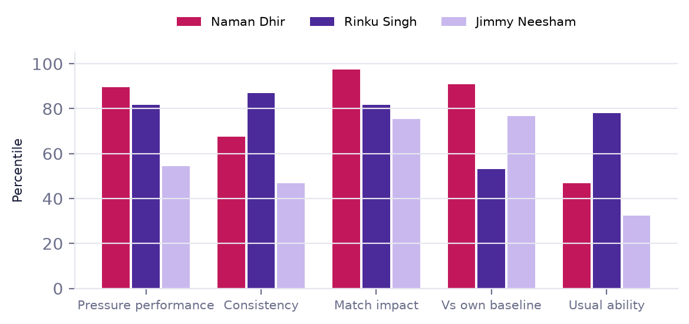
Best fits RR's Middle-overs batting need (priority 60/100). Context value in the middle phase is +3.7 per 100 balls over 257 balls (percentile 71 among eligible players). Overseas player; squad-fit 62 (65 without the overseas-slot cost). Hypothetical model estimate, not a forecast: +12.7 runs per season if given the 2026 middle balls of Dhruv Jurel (203 balls).
| Component (percentile) | George Dockrell | Shai Hope | Lorcan Tucker |
|---|---|---|---|
| Pressure perf. | 49 | 21 | 10 |
| Consistency | 12 | 38 | 38 |
| Impact | 62 | 18 | 4 |
| Vs baseline | 68 | 21 | 34 |
| Usual | 29 | 58 | 5 |
| Score (rank) | 45 (7) | 28 (11) | 18 (12) |
| HIGH-pressure balls | 207 | 155 | 169 |
Descriptive: SR 142.0 under HIGH pressure vs 138.6 in LOW-pressure situations. Strongest: vs baseline, impact. Weakest: consistency.

Best fits RR's Middle-overs batting need (priority 60/100). Context value in the middle phase is +1.3 per 100 balls over 264 balls (percentile 53 among eligible players). Overseas player; squad-fit 56 (57 without the overseas-slot cost). Hypothetical model estimate, not a forecast: +8.0 runs per season if given the 2026 middle balls of Dhruv Jurel (203 balls).
| Component (percentile) | Ibrahim Zadran | Shai Hope | Lorcan Tucker |
|---|---|---|---|
| Pressure perf. | 43 | 21 | 10 |
| Consistency | 78 | 38 | 38 |
| Impact | 13 | 18 | 4 |
| Vs baseline | 70 | 21 | 34 |
| Usual | 13 | 58 | 5 |
| Score (rank) | 45 (8) | 28 (11) | 18 (12) |
| HIGH-pressure balls | 206 | 155 | 169 |
Descriptive: SR 113.6 under HIGH pressure vs 122.7 in LOW-pressure situations. Strongest: consistency, vs baseline. Weakest: usual.

Best fits RR's Death-overs / finishing batting need (priority 81/100). Context value in the death phase is +6.1 per 100 balls over 149 balls (percentile 58 among eligible players). Overseas player; squad-fit 68 (72 without the overseas-slot cost). Hypothetical model estimate, not a forecast: +8.3 runs per season if given the 2026 death balls of Ravindra Jadeja (74 balls).
| Component (percentile) | Harry Tector | Charith Asalanka | Moeen Ali |
|---|---|---|---|
| Pressure perf. | 35 | 12 | 14 |
| Consistency | 53 | 40 | 16 |
| Impact | 34 | 1 | 5 |
| Vs baseline | 71 | 23 | 6 |
| Usual | 12 | 9 | 36 |
| Score (rank) | 41 (9) | 17 (13) | 14 (14) |
| HIGH-pressure balls | 208 | 285 | 185 |
Descriptive: SR 118.8 under HIGH pressure vs 128.2 in LOW-pressure situations. Strongest: vs baseline, consistency. Weakest: usual.

Best fits RR's Death-overs / finishing batting need (priority 81/100). Context value in the death phase is -0.1 per 100 balls over 133 balls (percentile 26 among eligible players). Overseas player; squad-fit 57 (58 without the overseas-slot cost). Hypothetical model estimate, not a forecast: +3.7 runs per season if given the 2026 death balls of Ravindra Jadeja (74 balls).
| Component (percentile) | Ryan Burl | Charith Asalanka | Moeen Ali |
|---|---|---|---|
| Pressure perf. | 23 | 12 | 14 |
| Consistency | 58 | 40 | 16 |
| Impact | 45 | 1 | 5 |
| Vs baseline | 12 | 23 | 6 |
| Usual | 43 | 9 | 36 |
| Score (rank) | 35 (10) | 17 (13) | 14 (14) |
| HIGH-pressure balls | 210 | 285 | 185 |
Descriptive: SR 121.4 under HIGH pressure vs 115.8 in LOW-pressure situations. Strongest: consistency, impact. Weakest: vs baseline.

Best fits RR's Death-overs / finishing batting need (priority 81/100). Context value in the death phase is +5.5 per 100 balls over 163 balls (percentile 53 among eligible players). Overseas player; squad-fit 67 (70 without the overseas-slot cost). Hypothetical model estimate, not a forecast: +7.8 runs per season if given the 2026 death balls of Ravindra Jadeja (74 balls).
| # | Player | Role (data) | Score | HIGH balls | Pressure spells | Value/100 HIGH | Econ HIGH / LOW | P(top 10) | 90% rank |
|---|---|---|---|---|---|---|---|---|---|
| 1.0 | Sikandar Raza | Middle-overs | 85 | 215 | 16 | +34.6 | 6.28 / 7.10 | 100% | 1–4 |
| 2.0 | Maheesh Theekshana | Multi-phase | 78 | 293 | 28 | +22.1 | 7.06 / 7.96 | 99% | 1–7 |
| 3.0 | Adam Zampa | Middle-overs | 77 | 323 | 27 | +17.7 | 7.47 / 9.37 | 100% | 1–6 |
| 4.0 | Joshua Little | Multi-phase | 64 | 202 | 16 | +28.2 | 7.75 / 9.04 | 98% | 1–9 |
| 5.0 | Adil Rashid | Middle-overs | 59 | 237 | 18 | +5.0 | 7.54 / 8.16 | 94% | 2–11 |
| 6.0 | Roston Chase | Middle-overs | 48 | 201 | 13 | +4.8 | 7.31 / 8.22 | 88% | 2–11 |
| 7.0 | Obed McCoy | Multi-phase | 40 | 176 | 15 | -0.8 | 9.82 / 10.30 | 93% | 3–11 |
| 8.0 | Richard Ngarava | Powerplay specialist | 37 | 173 | 14 | +1.7 | 9.09 / 8.25 | 86% | 3–12 |
| 9.0 | Alzarri Joseph | Multi-phase | 26 | 350 | 28 | -19.0 | 9.62 / 10.63 | 61% | 4–12 |
| 10.0 | Mark Adair | Powerplay specialist | 26 | 179 | 16 | -22.9 | 9.65 / 8.58 | 52% | 5–12 |
# = rank within the RR-acquirable pool. The score is unchanged: a percentile among all eligible players, so it compares directly with the unrestricted ranking below.
| Overall # | Player | Score | Why not in the RR list |
|---|---|---|---|
| 1 | Varun Chakravarthy | 96 | Under IPL contract: Kolkata Knight Riders (IPL 2026 squad) |
| 2 | Sunil Narine | 93 | Under IPL contract: Kolkata Knight Riders (IPL 2026 squad) |
| 3 | Jasprit Bumrah | 91 | Under IPL contract: Mumbai Indians (IPL 2026 squad) |
| 4 | Lockie Ferguson | 90 | Under IPL contract: Punjab Kings (IPL 2026 squad) |
| 5 | Rashid Khan | 90 | Under IPL contract: Gujarat Titans (IPL 2026 squad) |
| 6 | Axar Patel | 89 | Under IPL contract: Delhi Capitals (IPL 2026 squad) |
| 7 | Matheesha Pathirana | 89 | Under IPL contract: Kolkata Knight Riders (IPL 2026 squad) |
| 8 | Bhuvneshwar Kumar | 87 | Under IPL contract: Royal Challengers Bengaluru (IPL 2026 squad) |
| 9 | Kuldeep Yadav | 87 | Under IPL contract: Delhi Capitals (IPL 2026 squad) |
| 10 | Sikandar Raza | 85 | Acquirable: in the list |
Value/100 HIGH = runs above context expectation per 100 HIGH-pressure balls (wicket-cost adjusted, before opponent adjustment). Raw SR/economy are descriptive. HIGH-pressure balls cluster late in innings, so a lower raw rate can still be above what the situation demanded.
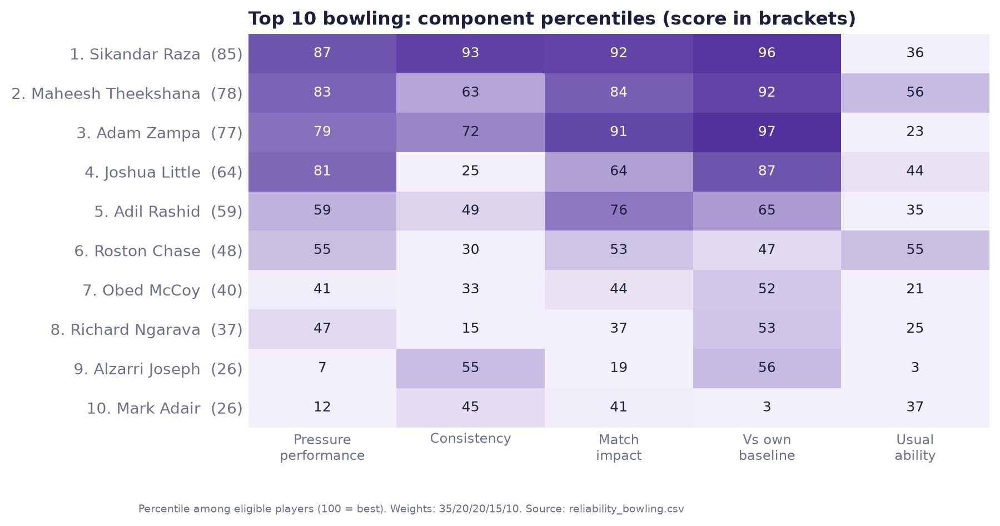
Each profile shows the verified identity and IPL 2027 status, the evidence, a comparison with the two strongest unselected players in the same data role, a bootstrap verdict on whether the difference is meaningful (clear ≥ 80%, moderate 65–80%, slight 55–65%, otherwise statistically indistinguishable), and how the player fits RR.
| Component (percentile) | Sikandar Raza | Ish Sodhi | FazalHaq Farooqi |
|---|---|---|---|
| Pressure perf. | 87 | 23 | 20 |
| Consistency | 93 | 33 | 11 |
| Impact | 92 | 5 | 40 |
| Vs baseline | 96 | 45 | 23 |
| Usual | 36 | 9 | 28 |
| Score (rank) | 85 (1) | 23 (11) | 23 (12) |
| HIGH-pressure balls | 215 | 175 | 201 |
Descriptive: economy 6.28 under HIGH pressure vs 7.10 in LOW; 12 HIGH-pressure wickets. Strongest: vs baseline, consistency. Weakest: usual.
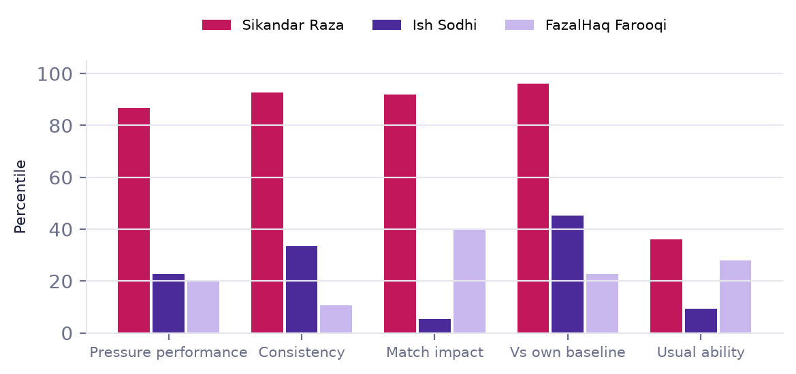
Best fits RR's Middle-overs bowling need (priority 56/100). Context value in the middle phase is +4.2 per 100 balls over 917 balls (percentile 72 among eligible players). Overseas player; squad-fit 61 (63 without the overseas-slot cost). Hypothetical model estimate, not a forecast: +7.7 runs per season if given the 2026 middle balls of Yash Punja (156 balls).
| Component (percentile) | Maheesh Theekshana | Ish Sodhi | FazalHaq Farooqi |
|---|---|---|---|
| Pressure perf. | 83 | 23 | 20 |
| Consistency | 63 | 33 | 11 |
| Impact | 84 | 5 | 40 |
| Vs baseline | 92 | 45 | 23 |
| Usual | 56 | 9 | 28 |
| Score (rank) | 78 (2) | 23 (11) | 23 (12) |
| HIGH-pressure balls | 293 | 175 | 201 |
Descriptive: economy 7.06 under HIGH pressure vs 7.96 in LOW; 13 HIGH-pressure wickets. Strongest: vs baseline, impact. Weakest: usual.

Best fits RR's Death-overs bowling need (priority 61/100). Context value in the death phase is +6.5 per 100 balls over 432 balls (percentile 85 among eligible players). Overseas player; squad-fit 68 (71 without the overseas-slot cost). Hypothetical model estimate, not a forecast: +3.5 runs per season if given the 2026 death balls of Tushar Deshpande (48 balls).
| Component (percentile) | Adam Zampa | Ish Sodhi | FazalHaq Farooqi |
|---|---|---|---|
| Pressure perf. | 79 | 23 | 20 |
| Consistency | 72 | 33 | 11 |
| Impact | 91 | 5 | 40 |
| Vs baseline | 97 | 45 | 23 |
| Usual | 23 | 9 | 28 |
| Score (rank) | 77 (3) | 23 (11) | 23 (12) |
| HIGH-pressure balls | 323 | 175 | 201 |
Descriptive: economy 7.47 under HIGH pressure vs 9.37 in LOW; 25 HIGH-pressure wickets. Strongest: vs baseline, impact. Weakest: usual.
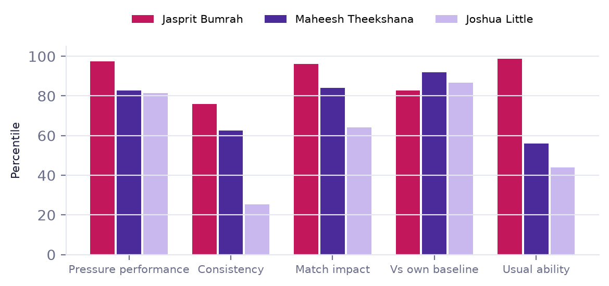
Best fits RR's Death-overs bowling need (priority 61/100). Context value in the death phase is +4.0 per 100 balls over 232 balls (percentile 74 among eligible players). Overseas player; squad-fit 64 (66 without the overseas-slot cost). Hypothetical model estimate, not a forecast: +2.3 runs per season if given the 2026 death balls of Tushar Deshpande (48 balls).
| Component (percentile) | Joshua Little | Ish Sodhi | FazalHaq Farooqi |
|---|---|---|---|
| Pressure perf. | 81 | 23 | 20 |
| Consistency | 25 | 33 | 11 |
| Impact | 64 | 5 | 40 |
| Vs baseline | 87 | 45 | 23 |
| Usual | 44 | 9 | 28 |
| Score (rank) | 64 (4) | 23 (11) | 23 (12) |
| HIGH-pressure balls | 202 | 175 | 201 |
Descriptive: economy 7.75 under HIGH pressure vs 9.04 in LOW; 13 HIGH-pressure wickets. Strongest: vs baseline, pressure perf.. Weakest: consistency.

Best fits RR's Powerplay bowling need (priority 49/100). Context value in the powerplay phase is +3.8 per 100 balls over 350 balls (percentile 69 among eligible players). Overseas player; squad-fit 56 (57 without the overseas-slot cost). Hypothetical model estimate, not a forecast: +4.7 runs per season if given the 2026 powerplay balls of Brijesh Sharma (72 balls).
| Component (percentile) | Adil Rashid | Ish Sodhi | FazalHaq Farooqi |
|---|---|---|---|
| Pressure perf. | 59 | 23 | 20 |
| Consistency | 49 | 33 | 11 |
| Impact | 76 | 5 | 40 |
| Vs baseline | 65 | 45 | 23 |
| Usual | 35 | 9 | 28 |
| Score (rank) | 59 (5) | 23 (11) | 23 (12) |
| HIGH-pressure balls | 237 | 175 | 201 |
Descriptive: economy 7.54 under HIGH pressure vs 8.16 in LOW; 12 HIGH-pressure wickets. Strongest: impact, vs baseline. Weakest: usual.
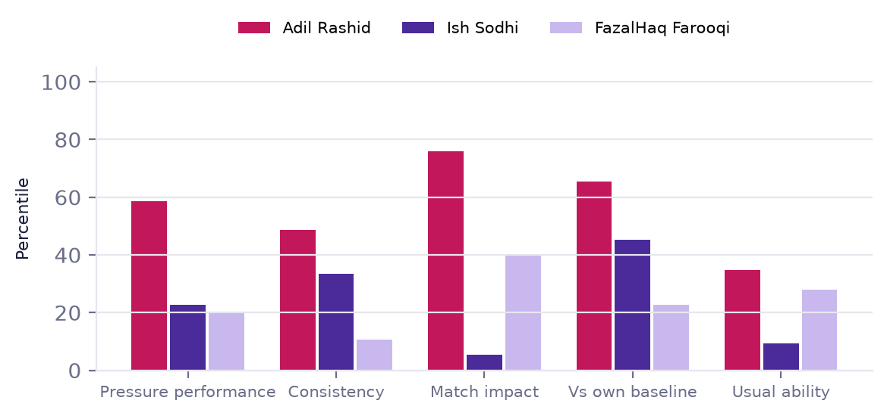
Best fits RR's Middle-overs bowling need (priority 56/100). Context value in the middle phase is -0.1 per 100 balls over 1117 balls (percentile 38 among eligible players). Overseas player; squad-fit 49 (49 without the overseas-slot cost). Hypothetical model estimate, not a forecast: +1.2 runs per season if given the 2026 middle balls of Yash Punja (156 balls).
| Component (percentile) | Roston Chase | Ish Sodhi | FazalHaq Farooqi |
|---|---|---|---|
| Pressure perf. | 55 | 23 | 20 |
| Consistency | 30 | 33 | 11 |
| Impact | 53 | 5 | 40 |
| Vs baseline | 47 | 45 | 23 |
| Usual | 55 | 9 | 28 |
| Score (rank) | 48 (6) | 23 (11) | 23 (12) |
| HIGH-pressure balls | 201 | 175 | 201 |
Descriptive: economy 7.31 under HIGH pressure vs 8.22 in LOW; 6 HIGH-pressure wickets. Strongest: pressure perf., usual. Weakest: consistency.

Best fits RR's Middle-overs bowling need (priority 56/100). Context value in the middle phase is +3.1 per 100 balls over 630 balls (percentile 65 among eligible players). Overseas player; squad-fit 58 (60 without the overseas-slot cost). Hypothetical model estimate, not a forecast: +6.1 runs per season if given the 2026 middle balls of Yash Punja (156 balls).
| Component (percentile) | Obed McCoy | Ish Sodhi | FazalHaq Farooqi |
|---|---|---|---|
| Pressure perf. | 41 | 23 | 20 |
| Consistency | 33 | 33 | 11 |
| Impact | 44 | 5 | 40 |
| Vs baseline | 52 | 45 | 23 |
| Usual | 21 | 9 | 28 |
| Score (rank) | 40 (7) | 23 (11) | 23 (12) |
| HIGH-pressure balls | 176 | 175 | 201 |
Descriptive: economy 9.82 under HIGH pressure vs 10.30 in LOW; 12 HIGH-pressure wickets. Strongest: vs baseline, impact. Weakest: usual.
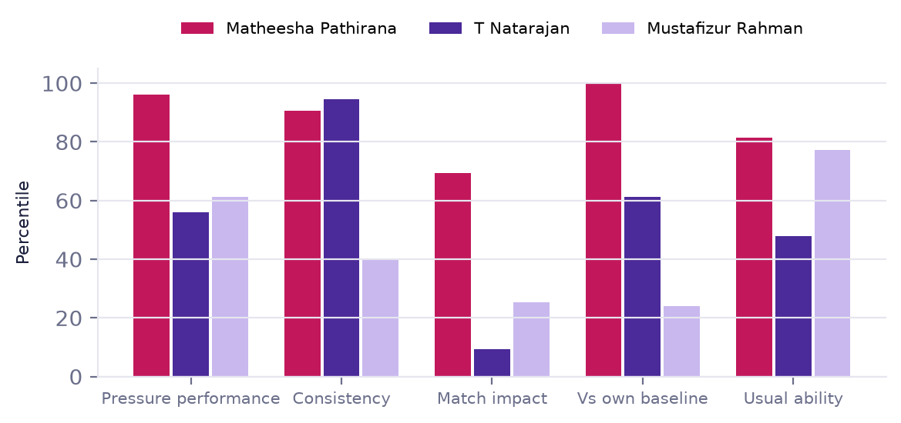
Best fits RR's Powerplay bowling need (priority 49/100). Context value in the powerplay phase is +3.2 per 100 balls over 204 balls (percentile 65 among eligible players). Overseas player; squad-fit 55 (55 without the overseas-slot cost). Hypothetical model estimate, not a forecast: +4.3 runs per season if given the 2026 powerplay balls of Brijesh Sharma (72 balls).
| Component (percentile) | Richard Ngarava | FazalHaq Farooqi | Ish Sodhi |
|---|---|---|---|
| Pressure perf. | 47 | 20 | 23 |
| Consistency | 15 | 11 | 33 |
| Impact | 37 | 40 | 5 |
| Vs baseline | 53 | 23 | 45 |
| Usual | 25 | 28 | 9 |
| Score (rank) | 37 (8) | 23 (12) | 23 (11) |
| HIGH-pressure balls | 173 | 201 | 175 |
Descriptive: economy 9.09 under HIGH pressure vs 8.25 in LOW; 11 HIGH-pressure wickets. Strongest: vs baseline, pressure perf.. Weakest: consistency.
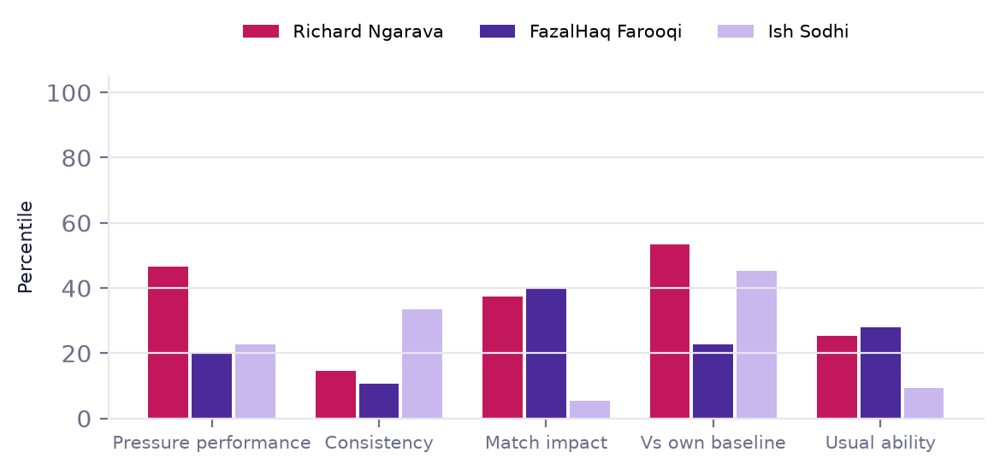
Best fits RR's Death-overs bowling need (priority 61/100). Context value in the death phase is -0.2 per 100 balls over 310 balls (percentile 52 among eligible players). Overseas player; squad-fit 56 (57 without the overseas-slot cost). Hypothetical model estimate, not a forecast: +0.3 runs per season if given the 2026 death balls of Tushar Deshpande (48 balls).
| Component (percentile) | Alzarri Joseph | Ish Sodhi | FazalHaq Farooqi |
|---|---|---|---|
| Pressure perf. | 7 | 23 | 20 |
| Consistency | 55 | 33 | 11 |
| Impact | 19 | 5 | 40 |
| Vs baseline | 56 | 45 | 23 |
| Usual | 3 | 9 | 28 |
| Score (rank) | 26 (9) | 23 (11) | 23 (12) |
| HIGH-pressure balls | 350 | 175 | 201 |
Descriptive: economy 9.62 under HIGH pressure vs 10.63 in LOW; 22 HIGH-pressure wickets. Strongest: vs baseline, consistency. Weakest: usual.

Best fits RR's Death-overs bowling need (priority 61/100). Context value in the death phase is -0.6 per 100 balls over 417 balls (percentile 45 among eligible players). Overseas player; squad-fit 54 (55 without the overseas-slot cost). Hypothetical model estimate, not a forecast: +0.1 runs per season if given the 2026 death balls of Tushar Deshpande (48 balls).
| Component (percentile) | Mark Adair | FazalHaq Farooqi | Ish Sodhi |
|---|---|---|---|
| Pressure perf. | 12 | 20 | 23 |
| Consistency | 45 | 11 | 33 |
| Impact | 41 | 40 | 5 |
| Vs baseline | 3 | 23 | 45 |
| Usual | 37 | 28 | 9 |
| Score (rank) | 26 (10) | 23 (12) | 23 (11) |
| HIGH-pressure balls | 179 | 201 | 175 |
Descriptive: economy 9.65 under HIGH pressure vs 8.58 in LOW; 12 HIGH-pressure wickets. Strongest: consistency, impact. Weakest: vs baseline.

Best fits RR's Powerplay bowling need (priority 49/100). Context value in the powerplay phase is +4.4 per 100 balls over 478 balls (percentile 76 among eligible players). Overseas player; squad-fit 59 (60 without the overseas-slot cost). Hypothetical model estimate, not a forecast: +5.2 runs per season if given the 2026 powerplay balls of Brijesh Sharma (72 balls).
The next acquirable players, with the component that separated them from #10. Bowling has only two (the acquirable bowling pool is 12 players). Where P(beats #10) is near 50%, the choice is statistically a coin-flip and is labelled as such in the profiles.
| Side | Rank | Player | Role | Score | Gap to #10 | P(top10) | P(beats #10) | Main shortfall vs #10 | Rank range (defs) |
|---|---|---|---|---|---|---|---|---|---|
| batting | 11 | Shai Hope | No.3 | 27.5 | 7.5 | 0.43 | 0.34 | impact percentile -0.27 | 2-11 |
| batting | 12 | Lorcan Tucker | No.3 | 17.7 | 17.3 | 0.25 | 0.19 | impact percentile -0.42 | 11-15 |
| batting | 13 | Charith Asalanka | Middle order (4-5) | 16.8 | 18.2 | 0.27 | 0.26 | impact percentile -0.44 | 12-14 |
| batting | 14 | Moeen Ali | Middle order (4-5) | 13.9 | 21.1 | 0.19 | 0.17 | consistency percentile -0.42 | 12-15 |
| batting | 15 | Roston Chase | Middle order (4-5) | 10.0 | 25.0 | 0.07 | 0.08 | impact percentile -0.43 | 12-15 |
| bowling | 11 | Ish Sodhi | Middle-overs | 23.4 | 2.3 | 0.67 | 0.51 | impact percentile -0.36 | 9-11 |
| bowling | 12 | FazalHaq Farooqi | Powerplay specialist | 23.3 | 2.3 | 0.62 | 0.53 | consistency percentile -0.35 | 8-12 |
Excluded despite statistical eligibility: Dinesh Karthik (no data 2025-26), Matthew Wade (no data 2025-26), Mohammad Rizwan (no data 2025-26), Iftikhar Ahmed (no data 2025-26), Andre Russell (Andre Russell: retired from IPL 30 Nov 2025 (S7)), Naveen ul Haq (no data 2025-26), Riley Meredith (no data 2025-26).
The 2026 squad (27 players) is verified against the data pack and official RR announcements. These record 13 retentions and the trades of Samson for Jadeja and Curran and of Rana for Ferreira. RR entered the auction with ₹16.05 cr and one overseas slot. Parag captained; Curran was ruled out for the season. RR won 9 of 16 matches and lost Qualifier 2. The IPL 2027 squad is pending: retentions are due 17 Nov 2026, and the mini-auction is on 16 Dec 2026 (Goa; maximum 25 players, 8 overseas).
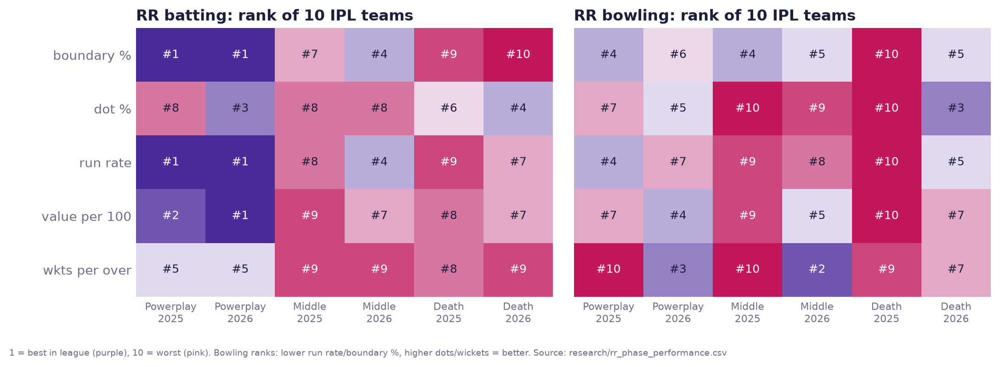
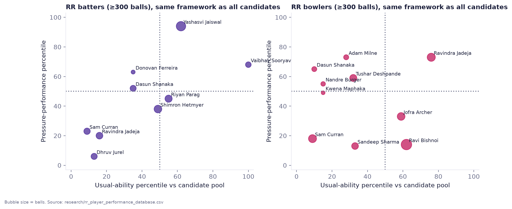
| RR batter | Role | Balls | SR | SR HIGH | Pressure pctile | Eligible / rank |
|---|---|---|---|---|---|---|
| Yashasvi Jaiswal | Opener | 1872 | 156.4 | 206.7 | 94 | No (sample) |
| Dhruv Jurel | Middle order (4-5) | 798 | 151.3 | 135.4 | 6 | Yes, #66 |
| Ravindra Jadeja | Finisher (6-7) | 958 | 135.1 | 140.0 | 20 | Yes, #68 |
| Riyan Parag | Middle order (4-5) | 1084 | 151.5 | 148.6 | 45 | Yes, #53 |
| Shimron Hetmyer | Middle order (4-5) | 1245 | 151.6 | 144.1 | 38 | Yes, #58 |
| Dasun Shanaka | Finisher (6-7) | 774 | 139.5 | 141.2 | 52 | Yes, #42 |
| Sam Curran | Finisher (6-7) | 858 | 130.8 | 135.8 | 23 | Yes, #65 |

Squad fit is a separate layer, scored as follows:

| Side | Rank | Player | Ind/Ovs | RR need | Fit | Top alternative | P(beats alt.) | Uplift* (runs) | Tier |
|---|---|---|---|---|---|---|---|---|---|
| batting | 1 | Daryl Mitchell | Overseas | Middle-overs batting | 61 | Charith Asalanka | 0.97 | 11.9 | Situational / depth |
| batting | 2 | Curtis Campher | Overseas | Middle-overs batting | 52 | Charith Asalanka | 0.97 | 6.7 | Situational / depth |
| batting | 3 | Kusal Mendis | Overseas | Middle-overs batting | 50 | Shai Hope | 0.92 | 5.7 | Situational / depth |
| batting | 4 | Mark Chapman | Overseas | Middle-overs batting | 70 | Charith Asalanka | 0.89 | 23.2 | Strong option |
| batting | 5 | Sikandar Raza | Overseas | Death-overs / finishing batting | 82 | Charith Asalanka | 0.95 | 19.7 | Primary target |
| batting | 6 | Jimmy Neesham | Overseas | Middle-overs batting | 62 | Shai Hope | 0.81 | 12.7 | Situational / depth |
| batting | 7 | George Dockrell | Overseas | Middle-overs batting | 56 | Shai Hope | 0.76 | 8.0 | Situational / depth |
| batting | 8 | Ibrahim Zadran | Overseas | Death-overs / finishing batting | 68 | Shai Hope | 0.73 | 8.3 | Situational / depth |
| batting | 9 | Harry Tector | Overseas | Death-overs / finishing batting | 57 | Charith Asalanka | 0.81 | 3.7 | Situational / depth |
| batting | 10 | Ryan Burl | Overseas | Death-overs / finishing batting | 67 | Charith Asalanka | 0.74 | 7.8 | Situational / depth |
| bowling | 1 | Sikandar Raza | Overseas | Middle-overs bowling | 61 | Ish Sodhi | 0.99 | 7.7 | Situational / depth |
| bowling | 2 | Maheesh Theekshana | Overseas | Death-overs bowling | 68 | Ish Sodhi | 0.94 | 3.5 | Situational / depth |
| bowling | 3 | Adam Zampa | Overseas | Death-overs bowling | 64 | Ish Sodhi | 0.96 | 2.3 | Situational / depth |
| bowling | 4 | Joshua Little | Overseas | Powerplay bowling | 56 | Ish Sodhi | 0.89 | 4.7 | Situational / depth |
| bowling | 5 | Adil Rashid | Overseas | Middle-overs bowling | 49 | Ish Sodhi | 0.8 | 1.2 | Situational / depth |
| bowling | 6 | Roston Chase | Overseas | Middle-overs bowling | 58 | Ish Sodhi | 0.69 | 6.1 | Situational / depth |
| bowling | 7 | Obed McCoy | Overseas | Powerplay bowling | 55 | Ish Sodhi | 0.66 | 4.3 | Situational / depth |
| bowling | 8 | Richard Ngarava | Overseas | Death-overs bowling | 56 | FazalHaq Farooqi | 0.71 | 0.3 | Situational / depth |
| bowling | 9 | Alzarri Joseph | Overseas | Death-overs bowling | 54 | Ish Sodhi | 0.45 | 0.1 | Situational / depth |
| bowling | 10 | Mark Adair | Overseas | Powerplay bowling | 59 | FazalHaq Farooqi | 0.47 | 5.2 | Situational / depth |
*Hypothetical model estimate, not a forecast: the player's phase value minus that of RR's weakest 2026 regular in the phase, times that regular's 2026 balls. It ignores role interactions and opposition.
IPL 2027 rules as reported (SportsTak, citing a BCCI communique of 2 Nov 2026): mini-auction, no retention cap, no Right-to-Match, maximum 25 players and 8 overseas. The IPL 2027 purse is not verified, so no financial claims are made. The lists are built from players not under contract today; players released on 17 Nov 2026 will join the pool, and the pipeline re-runs to include them.
| # | Player | Score |
|---|---|---|
| 1.0 | Daryl Mitchell | 77 |
| 2.0 | Curtis Campher | 76 |
| 3.0 | Kusal Mendis | 72 |
| 4.0 | Mark Chapman | 63 |
| 5.0 | Sikandar Raza | 62 |
| 6.0 | Jimmy Neesham | 58 |
| 7.0 | George Dockrell | 45 |
| 8.0 | Ibrahim Zadran | 45 |
| 9.0 | Harry Tector | 41 |
| 10.0 | Ryan Burl | 35 |
| # | Player | Score |
|---|---|---|
| 1.0 | Sikandar Raza | 85 |
| 2.0 | Maheesh Theekshana | 78 |
| 3.0 | Adam Zampa | 77 |
| 4.0 | Joshua Little | 64 |
| 5.0 | Adil Rashid | 59 |
| 6.0 | Roston Chase | 48 |
| 7.0 | Obed McCoy | 40 |
| 8.0 | Richard Ngarava | 37 |
| 9.0 | Alzarri Joseph | 26 |
| 10.0 | Mark Adair | 26 |
Reliable pressure performance is real but noisy. The defensible way to find it is to define pressure from the match situation, judge players against context and opponents, shrink small samples, and report how sure we are. On that basis the lists above are the most reliable performers under pressure in the 2022–26 data among players RR can actually sign. Their value to RR is clearest where RR has been weakest: finishing innings and defending at the death.
| ID | Source | URL | Published / updated | Accessed | Type |
|---|---|---|---|---|---|
| D | RR SupeRR Selector data pack (`data_set.zip`, SHA-256 `82da62e9…7f7d`) | — (private, supplied by RR) | Files dated 10–11 Nov 2026 | 2026-11-14 | O |
| S1 | Rajasthan Royals: "Rajasthan Royals announce retained players ahead of IPL 2026" | https://www.rajasthanroyals.com/latest-news/ipl-2026-rr-players-retention-list | 15 Nov 2025 | 2026-11-14 | O |
| S2 | Rajasthan Royals: trade announcement (Jadeja, Curran in; Samson out) | https://www.rajasthanroyals.com/ipl-2026-trade-rr-ravindra-jadeja-sam-curran-sanju-samson-csk | 15 Nov 2025 | 2026-11-14 | O |
| S3 | Rajasthan Royals: "Rajasthan Royals at IPL 2026 auction: Purse, slots and squad status" | https://www.rajasthanroyals.com/latest-news/rajasthan-royals-ipl-2026-auction-purse-slots-squad | 15 Dec 2025 | 2026-11-14 | O |
| S4 | Wikipedia: "2026 Rajasthan Royals season" | https://en.wikipedia.org/wiki/2026_Rajasthan_Royals_season | Last updated 12 Oct 2026 (per page) | 2026-11-14 | W |
| S5 | SportsTak: "BCCI extends IPL 2027 retention deadline…" | https://thesportstak.com/cricket/story/bcci-extends-ipl-2027-retention-deadline-amid-india-new-zealand-odi-clash-will-auction-date-change-too-3559176-2026-11-02 | 2 Nov 2026 | 2026-11-14 | N |
| S6 | Outlook India: RR IPL 2026 preview | https://www.outlookindia.com/sports/cricket/rajasthan-royals-preview-indian-premier-league-2026 | 22 Mar 2026 | 2026-11-14 | N |
| S7 | Jamaica Gleaner (CMC): "Russell retires from IPL, transitions to KKR's 'Power coach'" | https://jamaica-gleaner.com/article/sports/20251201/russell-retires-ipl-transitions-kkrs-power-coach | 30 Nov 2025 (updated 9 Dec 2025) | 2026-11-14 | N |
| S8 | IPL (iplt20.com) media advisory: "KKR pick Luvnith Sisodia as replacement for injured Matheesha Pathirana" | https://www.iplt20.com/news/4371/kkr-pick-luvnith-sisodia-as-replacement-for-injured-matheesha-pathirana | 24 May 2026 | 2026-11-14 | O |
| S9 | IPL (iplt20.com) media advisory: "Rishabh Pant and Kuldeep Yadav complete high-profile trade between DC and LSG" | https://www.iplt20.com/news/article/rishabh-pant-and-kuldeep-yadav-complete-high-profile-trade-between-dc-and-lsg | 23 Jun 2026 | 2026-11-14 | O |
| S10 | Lucknow Super Giants: "Rishabh Pant and Kuldeep Yadav complete trade between LSG and DC" | https://www.lucknowsupergiants.in/news/rishabh-pant-kuldeep-yadav-trade-ipl-2027-lucknow-super-giants-cricket | 23 Jun 2026 | 2026-11-14 | O |
| S11 | Tribune India (ANI): "Glenn Phillips is a brilliant player: GT wicketkeeper-batter Jos Buttler" | https://www.tribuneindia.com/news/sports/glenn-phillips-is-a-brilliant-player-gt-wicketkeeper-batter-jos-buttler/ | 28 Mar 2026 | 2026-11-14 | N |
| S12 | Akashvani (All India Radio): "KKR releases Bangladesh pacer Mustafizur Rahman following BCCI instructions" | https://www.newsonair.gov.in/kkr-releases-bangladesh-pacer-mustafizur-rahman-following-bcci-instructions | 3 Jan 2026 | 2026-11-14 | O |
| S13 | Wisden: "Reports: IPL-owned Hundred franchises to not sign Pakistan players" | https://www.wisden.com/cricket-news/reports-ipl-owned-hundred-franchises-to-not-sign-pakistan-players | 20 Feb 2026 | 2026-11-14 | N |
| S14 | Tribune India (ANI): "Harry Brook banned from IPL for two years following withdrawal from 2025 season" | https://www.tribuneindia.com/news/sports/harry-brook-banned-from-ipl-for-two-years-following-withdrawal-from-2025-season-tournament-official | 13 Mar 2025 | 2026-11-14 | N |
| S15 | Gulf News (IANS): "Ravichandran Ashwin announces retirement from IPL" | https://gulfnews.com/sport/cricket/ravichandran-ashwin-announces-retirement-from-ipl-aims-to-play-in-overseas-t20-leagues-1.500246714 | 27 Aug 2025 | 2026-11-14 | N |
| S16 | Tribune India (ANI): "Mohit Sharma announces retirement from all forms of cricket" | https://www.tribuneindia.com/news/sports/innings-over-gratitude-forever-mohit-sharma-announces-retirement-from-all-forms-of-cricket | 3 Dec 2025 | 2026-11-14 | N |
| W-GP | Wikipedia: Glenn Phillips (cricketer) | https://en.wikipedia.org/wiki/Glenn_Phillips_(cricketer) | ~12 Nov 2026 (summary only) | 2026-11-14 | W |
| W-FS | Wikipedia player pages for the final RR-acquirable selection (18 new names; codes W-DMi, W-CC, W-KM, W-MC, W-JN, W-GD, W-IZ, W-HT, W-RB, W-MT, W-AZ, W-JL, W-AR2, W-RC, W-OM, W-RN, W-AJ, W-MA) | en.wikipedia.org/wiki/{Daryl_Mitchell, Curtis_Campher, Kusal_Mendis, Mark_Chapman, Jimmy_Neesham, George_Dockrell, Ibrahim_Zadran, Harry_Tector, Ryan_Burl, Maheesh_Theekshana, Adam_Zampa, Joshua_Little_(cricketer), Adil_Rashid, Roston_Chase, Obed_McCoy, Richard_Ngarava, Alzarri_Joseph, Mark_Adair} | read 2026-11-14 | 2026-11-14 | W |
| W-* | Wikipedia player pages (20). Identity fields read verbatim; "last edited" 12–13 Nov 2026 | en.wikipedia.org/wiki/{Shreyas_Iyer, Heinrich_Klaasen, Rajat_Patidar, Tilak_Varma, Andre_Russell, Ishan_Kishan, Naman_Dhir, Tim_David, David_Miller_(South_African_cricketer), Suryakumar_Yadav, Varun_Chakravarthy, Sunil_Narine, Jasprit_Bumrah, Lockie_Ferguson, Rashid_Khan, Axar_Patel, Matheesha_Pathirana, Bhuvneshwar_Kumar, Kuldeep_Yadav, Sikandar_Raza} | 12–13 Nov 2026 | 2026-11-14 | W |
src/ (data → models → features → scouting → reporting), with 56 automated tests, fixed seed 2027, and leave-one-year-out cross-fitting for all production predictions.Generated by src/reporting/build_report.py. Every table and player figure is read from pipeline outputs in reports/ and research/.